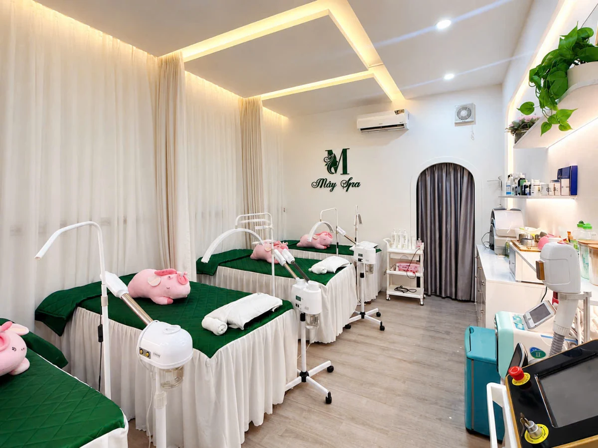

Da sần, bí tắc, nhiều dầu hoặc bã nhờn.
LẤY NHÂN MỤN · CHUẨN Y KHOA
Lấy Nhân Mụn Chuyên Sâu Chuẩn Y Khoa
Mây kiểm tra nền da trước, lựa chọn cách làm sạch và lấy nhân phù hợp, báo giá rõ trước khi thực hiện.
Không phải nền da nào cũng nên lấy nhân giống nhau.
Mụn Chuyên Sâu từ289.000đ
64 Nguyễn Hậu, phường Phú Thọ Hòa, TP.HCM
✓ Kiểm tra nền da trước
✓ Giá rõ trước khi thực hiện
✓ Quy trình vệ sinh – sát khuẩn
✓ Không ép mua liệu trình
BẠN ĐANG GẶP?
Da bí tắc, nhiều mụn ẩn nhưng chưa biết có nên lấy nhân ngay?
Mây ưu tiên kiểm tra nền da trước thay vì áp dụng cùng một cách chăm sóc cho tất cả khách.
Nhiều mụn đầu đen, mụn ẩn.
Từng tự nặn khiến da dễ đỏ sau đó.
Muốn làm sạch nhưng chưa biết nền da hiện tại có phù hợp.
KHÔNG PHẢI DA MỤN NÀO CŨNG GIỐNG NHAU
Mây nhìn nền da tổng thể trước khi chọn cách chăm sóc
Điểm quan trọng không nằm ở việc lấy được bao nhiêu nhân mụn, mà là nền da hiện tại phù hợp với mức tác động nào.
Nền da đang ổn định
Có thể tiến hành làm sạch và lấy nhân phù hợp khi nền da đủ điều kiện.
Nền da yếu, đỏ hoặc kích ứng
Có thể cần ưu tiên làm dịu hoặc phục hồi trước thay vì cố lấy nhiều nhân ngay.
Mục tiêu không phải nặn càng nhiều càng tốt, mà là làm đúng và đủ theo nền da hiện tại.
QUY TRÌNH TẠI MÂY
Quy trình lấy nhân mụn tại Mây
Từ kiểm tra nền da đến chăm sóc sau thực hiện
Kiểm tra nền da
Chuyên viên kiểm tra tình trạng hiện tại, trao đổi nhu cầu và xác định mức chăm sóc phù hợp.
Làm sạch & chuẩn bị da
Các bước làm sạch, hỗ trợ làm mềm và chuẩn bị da được điều chỉnh theo nền da thực tế.
Sát khuẩn & lấy nhân phù hợp
Chuẩn bị vùng da, dụng cụ và lựa chọn thao tác phù hợp với từng loại nhân.
Làm dịu & chăm sóc sau lấy nhân
Các bước chăm sóc sau thực hiện được lựa chọn dựa trên nền da và mức độ cần thiết.
Kiểm tra lại & hướng dẫn tại nhà
Mây kiểm tra tình trạng sau thực hiện và hướng dẫn routine tối giản, phù hợp.
Quy trình thực tế tại Mây gồm nhiều bước chăm sóc chi tiết. Các bước được điều chỉnh theo nền da, không áp dụng máy móc giống nhau cho tất cả khách.
CHỌN MỨC CHĂM SÓC PHÙ HỢP
Giá rõ trước khi thực hiện
Mây kiểm tra nền da trước và tư vấn mức chăm sóc phù hợp với tình trạng hiện tại.
Mụn Chuyên Sâu
289.000đ
Dành cho khách cần làm sạch và lấy nhân phù hợp.
Kiểm tra da & chọn góiDeep Clean
389.000đ
Làm sạch sâu hơn, hỗ trợ lấy nhân và bổ sung các bước chăm sóc – làm dịu sau lấy nhân.
Kiểm tra da & chọn góiCombo Nặn mụn + Peel vi điểm
500.000đ
Lấy sạch nhân mụn, chấm peel mụn viêm, mụn mủ, hỗ trợ giảm sưng viêm và gom cồi nhanh.
Kiểm tra da & chọn góiPeel trị mụn
950.000đ
750.000đ
Giá trải nghiệm
Peel được lựa chọn theo nền da và tình trạng mụn, hỗ trợ xử lý bít tắc, mụn và thâm sau mụn.
Kiểm tra da & chọn góiVÌ SAO MÂY LÀM KHÁC?
Chăm sóc đúng và đủ theo nền da hiện tại
Mây kiểm tra nền da trước, tư vấn rõ dịch vụ và chi phí trước khi thực hiện.
Kiểm tra nền da trước
Chọn mức chăm sóc theo tình trạng hiện tại.
Không giới hạn thời gian lấy mụn
Làm đúng và đủ theo tình trạng da hiện tại.
Giá rõ trước khi làm
Khách biết chi phí trước khi quyết định.
Routine tại nhà tối giản
Tập trung những bước da thực sự cần.
Sản phẩm rõ nguồn gốc
Không kem trộn, thuốc rượu.
Không chèo kéo liệu trình
Tư vấn dựa trên nhu cầu và nền da.
HÌNH ẢNH THỰC TẾ MÂY SPA
Con người thật, quy trình thật, không gian thật
Hình ảnh được ghi lại trong quá trình tư vấn, chăm sóc và tại không gian thực tế của Mây Spa.

CHUYÊN VIÊN & CÁCH MÂY TƯ VẤN
Trước khi KTV thực hiện, nền da được kiểm tra trước
Chuyên viên kiểm tra nền da, trao đổi tình trạng hiện tại và tư vấn mức chăm sóc, routine phù hợp trước khi KTV thực hiện.
Mây nhìn nền da tổng thể để cân nhắc nên làm sạch, lấy nhân hay ưu tiên làm dịu – phục hồi trước.
Đặt lịch kiểm tra da →FEEDBACK THỰC TẾ
Khách hàng nói gì sau khi trải nghiệm tại Mây?
Những chia sẻ thực tế từ khách hàng sau khi sử dụng dịch vụ tại Mây Spa.
CÂU HỎI THƯỜNG GẶP
Những điều khách thường hỏi trước khi lấy nhân mụn
Lấy nhân mụn có đau không?
Cảm giác tùy tình trạng da, vị trí và loại nhân mụn. Mây ưu tiên thao tác phù hợp và hạn chế tác động không cần thiết.
Da nhiều mụn ẩn có lấy được không?
Cần kiểm tra nền da và tình trạng nhân mụn trước. Nếu da đủ điều kiện, Mây sẽ tư vấn cách làm sạch và lấy nhân phù hợp.
Da đang đỏ hoặc kích ứng có nên nặn mụn không?
Không phải lúc nào cũng nên lấy nhân ngay. Một số nền da có thể cần ưu tiên làm dịu hoặc phục hồi trước.
Một buổi có lấy hết nhân mụn không?
Tùy nền da và tình trạng nhân mụn. Mây ưu tiên thao tác phù hợp với nền da hiện tại, không cố tác động những nhân chưa phù hợp để lấy.
Sau lấy nhân cần chăm sóc như thế nào?
Mây sẽ hướng dẫn routine dựa trên tình trạng da sau thực hiện, theo hướng gọn và phù hợp với nhu cầu thực tế.
Mụn Chuyên Sâu 289k có phát sinh thêm không?
289.000đ là giá trọn gói của dịch vụ Mụn Chuyên Sâu, không phát sinh chi phí và không giới hạn thời gian lấy nhân mụn trong dịch vụ đã chọn.
Đến Mây có bắt buộc mua liệu trình không?
Không. Mây kiểm tra nền da, tư vấn mức chăm sóc và báo giá trước. Khách có thể lựa chọn buổi lẻ hoặc mức chăm sóc phù hợp với nhu cầu, không bắt buộc mua liệu trình.
Có cần đặt lịch trước không?
Nên đặt lịch trước để Mây chủ động sắp xếp thời gian kiểm tra da và KTV phù hợp.
ĐẶT LỊCH TƯ VẤN
Chưa biết dịch vụ nào phù hợp với nền da của mình?
Để lại thông tin, Mây kiểm tra nhu cầu và tư vấn mức chăm sóc phù hợp trước khi thực hiện.
Mây Spa Tân Phú64 Nguyễn Hậu, phường Phú Thọ Hòa, TP.HCM0911 400 718
MÂY SPA TÂN PHÚ Ở ĐÂU?
64 Nguyễn Hậu, phường Phú Thọ Hòa, TP.HCM
Hotline: 0911 400 718
📍 Mở Google Maps để xem đường đi và vị trí chính xác của Mây Spa.
LÀM ĐÚNG VÀ ĐỦ THEO NỀN DA HIỆN TẠI
Đặt lịch để Mây kiểm tra nền da trước khi thực hiện
Mây tư vấn mức chăm sóc phù hợp và báo giá rõ trước khi làm.